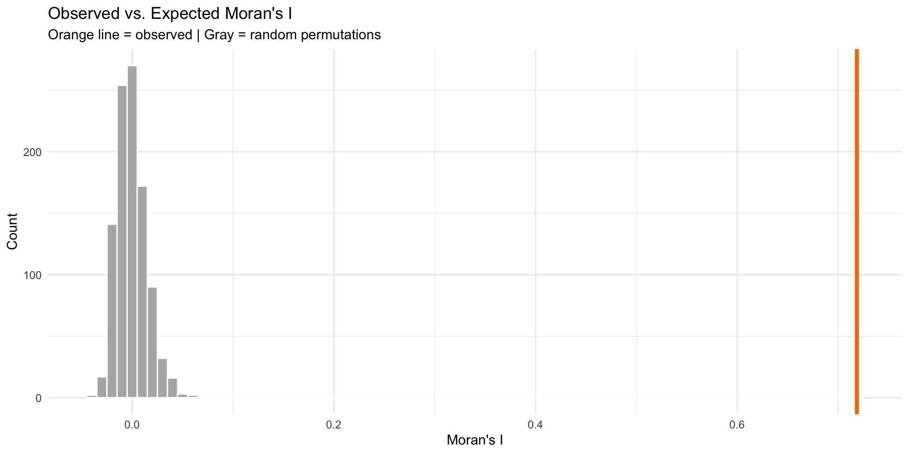

Model Diagnostics & Spatial Autocorrelation
Week 7: MUSA 5080
2025-10-21
Homework Feedback & Tips
Before We Start: A Quick Note on Your Submissions
We noticed something in your homework submissions…
Many of you have messy output in your rendered HTML files from tigris and tidycensus functions.
Example of what we’re seeing:
Retrieving data for the year 2022
|======================================================================| 100%
|======================================================================| 100%
Downloading: 4.3 MB
Downloading: 3.7 MBThis clutters your professional report!
The Problem: Progress Bars in Rendered Output
What’s happening:
When you use tigris or tidycensus functions, they show download progress by default.
In your console (good!):
Shows:
Getting data from the 2018-2022 5-year ACS
|======| 100%This is helpful when coding!
In your rendered HTML (bad!):
All those progress messages appear as ugly text in your final document.
This looks unprofessional and makes your work harder to read.
Solution: Suppress progress messages in your code chunks
The Solution: Add progress = FALSE
Two ways to fix this:
Option 1: In each function call
Option 2: Set globally at top of document (Recommended!)
Action Required: Re-Render Before Final Grading
📝 To-Do Before We Grade
Please go back to your homework and:
- Open your
.qmdfile - Add
progress = FALSEto allget_acs(),get_decennial(), andtigrisfunction calls- OR add the global options at the top of your document
- Re-render your document (Click “Render” button)
- Check that the HTML output is clean
- Re-submit on Canvas if needed (but it should all update on your website once you re-render!)
Deadline: Before our next class meeting
Why this matters: We gotta look good!
Today’s Plan
Agenda Overview
Part 1: Review & Connect
- Where we’ve been and where we’re going
- The regression workflow so far
Part 2: Evaluating Model Quality
- Train/test splits vs. cross-validation review
- Spatial patterns in errors
- Introduction to spatial autocorrelation
Part 3: Moran’s I as a Diagnostic
- Understanding spatial clustering
- Calculating and interpreting Moran’s I
- Local vs. global measures
BREAK (10 min)
Part 4: Midterm Work Session (90+ min)
Part 1: Where We Are
The Journey So Far
Weeks 1-3: Data foundations
- Census data, tidycensus, spatial data basics
- Visualization and exploratory analysis
Week 5: Linear regression fundamentals
- Y = f(X) + ε framework
- Train/test splits, cross-validation
- Checking assumptions
Week 6: Expanding the toolkit
- Categorical variables and interactions
- Spatial features (buffers, kNN, distance)
- Neighborhood fixed effects
Last Week’s Key Innovation
You learned to create spatial features:
Today’s Question:
How do we know if our model still has spatial structure in its errors?
If errors are spatially clustered, we’re missing something important!
The Regression Workflow (Updated)
Building the model:
- Visualize relationships
- Engineer features
- Fit the model
- Evaluate performance (RMSE, R²)
- Check assumptions
NEW: Spatial diagnostics:
- Are errors random or clustered?
- Do we predict better in some areas?
- Is there remaining spatial structure?
Why This Matters
If errors cluster spatially, it suggests:
- Missing spatial variables
- Misspecified relationships
- Non-stationarity (relationships vary across space)
Part 2: Understanding Spatial Patterns in Errors
What Are Model Errors?
Prediction error for observation i:
\[e_i = \hat{y}_i - y_i\]
Where:
- \(\hat{y}_i\) = predicted value
- \(y_i\) = actual value
In our house price context:
# Load packages and data
library(sf)
library(here)
library(tidyverse)
# Load Boston housing data
boston <- read_csv(here("data/boston.csv"))
# Simple model: Predict price from living area
baseline_model <- lm(SalePrice ~ LivingArea, data = boston)
summary(baseline_model)
Call:
lm(formula = SalePrice ~ LivingArea, data = boston)
Residuals:
Min 1Q Median 3Q Max
-855962 -219491 -68291 55248 9296561
Coefficients:
Estimate Std. Error t value Pr(>|t|)
(Intercept) 157968.32 35855.59 4.406 1.13e-05 ***
LivingArea 216.54 14.47 14.969 < 2e-16 ***
---
Signif. codes: 0 '***' 0.001 '**' 0.01 '*' 0.05 '.' 0.1 ' ' 1
Residual standard error: 563800 on 1483 degrees of freedom
Multiple R-squared: 0.1313, Adjusted R-squared: 0.1307
F-statistic: 224.1 on 1 and 1483 DF, p-value: < 2.2e-16Good Errors vs. Bad Errors
** Random errors (good)**
- No systematic pattern
- Scattered across space
- Prediction equally good everywhere
- Model captures key relationships
** Clustered errors (bad)**
- Spatial pattern visible
- Under/over-predict in areas
- Model misses something about location
- Need more spatial features!
How do we test this?
Look for spatial autocorrelation in the errors
Tobler’s First Law (Revisited)
The First Law of Geography
“Everything is related to everything else, but near things are more related than distant things.”
— Waldo Tobler (1970)
Applied to house prices:
- Nearby houses have similar prices
- Nearby neighborhoods have similar characteristics
- Crime in one block affects adjacent blocks
Applied to model errors:
- If nearby houses have similar errors…
- …our model is missing a spatial pattern!
- Need to add more spatial features or fixed effects
Visualizing Error Patterns
Map your errors to see patterns:

What to look for:
- Blue clusters (we under-predict)
- Red clusters (we over-predict)
- Random scatter (good!)
Scatter Plot: Spatial Lag of Errors
Create the spatial lag:
Then plot:

Part 3: Moran’s I
What is Moran’s I?
Moran’s I measures spatial autocorrelation
Range: -1 to +1
- +1 = Perfect positive correlation (clustering)
- 0 = Random spatial pattern
- -1 = Perfect negative correlation (dispersion)
Formula (look’s scary, but its so intuitive!):
\[I = \frac{n \sum_i \sum_j w_{ij}(x_i - \bar{x})(x_j - \bar{x})}{\sum_i \sum_j w_{ij} \sum_i (x_i - \bar{x})^2}\]
Where \(w_{ij}\) = spatial weight between locations i and j
Worked Example: Understanding the Formula
5 houses in a row, predicting sale prices:
| House | Actual Price | Predicted Price | Error |
|---|---|---|---|
| A | $500k | $400k | +$100k |
| B | $480k | $400k | +$80k |
| C | $420k | $400k | +$20k |
| D | $350k | $400k | -$50k |
| E | $330k | $400k | -$70k |
Mean error = +$16k
The question: Are errors for nearby houses similar to each other?
Step 1: Calculate Deviations from Mean
Subtract the mean error from each house’s error:
| House | Error | Mean Error | Deviation from Mean |
|---|---|---|---|
| A | +$100k | +$16k | +$84k |
| B | +$80k | +$16k | +$64k |
| C | +$20k | +$16k | +$4k |
| D | -$50k | +$16k | -$66k |
| E | -$70k | +$16k | -$86k |
Positive deviation = we over-predicted (actual > predicted)
Negative deviation = we under-predicted (actual < predicted)
Step 2: Multiply Neighbor Deviations
For each neighbor pair, multiply their deviations:
Neighbor Pairs:
- A-B: \((+84k) \times (+64k) = +5,376\)
- B-C: \((+64k) \times (+4k) = +256\)
- C-D: \((+4k) \times (-66k) = -264\)
- D-E: \((-66k) \times (-86k) = +5,676\)
Sum of products = 11,044
What does this mean?
Positive products = similar neighbors - A-B: both over-predicted (both positive) - D-E: both under-predicted (both negative)
Negative product = dissimilar neighbors
- C-D: one over, one under
The pattern: High-error houses cluster together, low-error houses cluster together
The Intuition Behind Moran’s I
The formula is really just asking:
“When I’m above/below average, are my neighbors also above/below average?”
Breaking it down:
\((x_i - \bar{x})\) = How far is my house’s error from the mean?
\((x_j - \bar{x})\) = How far is my neighbor’s error from the mean?
Multiply them:
- If both positive or both negative → positive product (similar)
- If opposite signs → negative product (dissimilar)
Sum across all neighbor pairs and normalize
Result:
- Lots of positive products → High Moran’s I (clustering)
- Products near zero → Low Moran’s I (random)
- Negative products → Negative Moran’s I (rare with errors)
The Intuition Behind Moran’s I
The formula is really just asking:
“When I’m above/below average, are my neighbors also above/below average?”
Breaking it down:
\((x_i - \bar{x})\) = How far am I from the mean?
\((x_j - \bar{x})\) = How far is my neighbor from the mean?
Multiply them:
- If both positive or both negative → positive product (similar)
- If opposite signs → negative product (dissimilar)
Sum across all neighbor pairs and normalize
Result:
- Lots of positive products → High Moran’s I (clustering)
- Products near zero → Low Moran’s I (random)
- Negative products → Negative Moran’s I (rare with errors)
Defining “Neighbors”
Different ways to define spatial relationships:
Contiguity
- Polygons that share a border
- Queen vs. Rook
Distance
- All within X meters
- Fixed threshold
k-Nearest
- Closest k points
- Adaptive distance
For point data (houses), use k-nearest neighbors
Calculating Spatial Lag
Spatial lag = average value of neighbors
Example: 5 houses
| House | Sale Price | 2 Nearest | Spatial Lag |
|---|---|---|---|
| A | $200k | B, C | $275k |
| B | $250k | A, C | $250k |
| C | $300k | B, D | $275k |
| D | $350k | C, E | $350k |
| E | $400k | D | $350k |
In R:
Computing Moran’s I
Calculate Moran’s I for your errors:
# Test for spatial autocorrelation in errors
moran_test <- moran.mc(
boston_test$error, # Your errors
weights, # Spatial weights matrix
nsim = 999 # Number of permutations
)
# View results
moran_test$statistic # Moran's I valuestatistic
0.7186593 [1] 0.001Interpretation:
- I > 0 and p < 0.05 → Significant clustering
- I ≈ 0 → Random pattern (good!)
- I < 0 → Dispersion (rare with errors)
Visualizing Significance
Compare observed I to random permutations:
What Moran’s I Tells You
Decision Framework
If Moran’s I is high (errors clustered):
- Add more spatial features
- Try different buffer sizes
- Include more amenities/disamenities
- Create neighborhood-specific variables
- Try spatial fixed effects
- Neighborhood dummies
- Grid cell dummies
- Consider spatial regression models
- Spatial lag model
- Spatial error model
- (Advanced topic, not covered today)
If Moran’s I ≈ 0 (random errors):
✅ Your model adequately captures spatial relationships!
“What About Spatial Lag/Error Models?”
“In my spatial statistics class, I learned about spatial lag and spatial error models for dealing with spatial autocorrelation. Why aren’t we using those here?”
Spatial Econometrics Models
(Spatial Statistics Class)
Spatial Lag Model: \(Y_i = \rho WY + \beta X_i + \varepsilon\)
Spatial Error Model: \(Y_i = \beta X_i + \lambda W\varepsilon + \xi\)
Purpose:
- Causal inference with spatial spillovers
- Understanding neighbor effects
- Correct standard errors for hypothesis testing
- Cross-sectional analysis
When to use: Academic research on spillover effects, peer influence, regional economics
Predictive Spatial Features
(This Class)
Our Approach: \[Y_i = \beta_0 + \beta_1 X_i + \beta_2(\text{crimes}_{500ft}) + \beta_3(\text{dist}_{downtown}) + \varepsilon_i\]
Purpose:
- Out-of-sample prediction
- Forecasting new observations
- Applied machine learning
- Generalization to new areas
When to use: Real estate prediction, housing market forecasting, policy planning
Why Not Spatial Lag Models for Prediction?
The Problems with Spatial Lag for Prediction:
1. Simultaneity Problem
- Including \(WY\) (neighbor prices) creates circular logic
- My price affects neighbors → neighbors affect me
- OLS estimates are biased and inconsistent
2. Prediction Paradox
- Need neighbors’ prices to predict my price
- But for new developments or future periods, those prices don’t exist yet
- Can’t generalize to truly new areas
3. Data Leakage in CV
- Geographic CV holds out spatial regions
- Spatial lag “leaks” information from test set
- Artificially good performance that won’t hold
Our Solution: Spatial Features of X (Not Y)
Instead of modeling dependence in Y (prices), model proximity in X (predictors)
| ❌ Spatial Lag | ✅ Our Approach |
|---|---|
| “Near expensive houses” | “Near low crime areas” |
| Uses neighbor prices | Uses neighbor characteristics |
| Circular logic | Causal mechanism |
| Can’t predict new areas | Generalizes well |
If Moran’s I shows clustered errors:
✅ Add more spatial features (different buffers, more amenities)
✅ Try neighborhood fixed effects
✅ Use spatial cross-validation
❌ Don’t add spatial lag of Y for prediction purposes
The Bottom Line
Both approaches are valid for different goals! Match method to purpose: inference → spatial lag/error models; prediction → spatial features.
Quick Clarification: Biased vs. Inconsistent
When we say OLS estimates are “biased and inconsistent” with spatial lag models, what does that mean?
Biased Estimator
Definition: Expected value ≠ true parameter
\[E[\hat{\beta}] \neq \beta\]
What this means:
- On average, across all possible samples, your estimate is systematically wrong
- Doesn’t get the right answer even in expectation
- More data doesn’t fix it
Example:
- True effect: β = 100
- Your estimates average to: 80
- You’re systematically 20 units off
Inconsistent Estimator
Definition: Doesn’t converge to true value as n → ∞
\[\hat{\beta} \not\to \beta \text{ as } n \to \infty\]
What this means:
- Even with infinite data, you won’t get the right answer
- The problem doesn’t go away with bigger samples
- Violates a fundamental property of good estimators
Example: - n = 100 → estimate = 80 - n = 10,000 → estimate = 82 - n = 1,000,000 → estimate = 84 - Never reaches true value of 100
Summary & Next Steps
Key Takeaways
Spatial autocorrelation in errors indicates model misspecification
Moran’s I is a diagnostic tool:
- Global I: overall clustering
- Maps of residuals give clues to what you might be missing
Iterative improvement:
- Diagnose → Engineer features → Re-test → Repeat
- Document what you try!
Resources
Spatial autocorrelation: - https://mgimond.github.io/Spatial/spatial-autocorrelation.html
spdep package: - https://r-spatial.github.io/spdep/
Questions Before Work Time?
Come see me during the work session for:
- Help with Moran’s I calculation
- Ideas for new spatial features
- Debugging code issues
- Discussing your model strategy